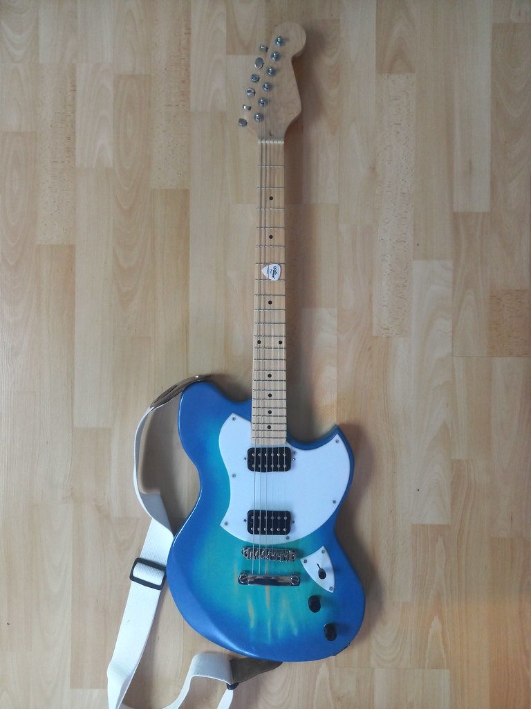
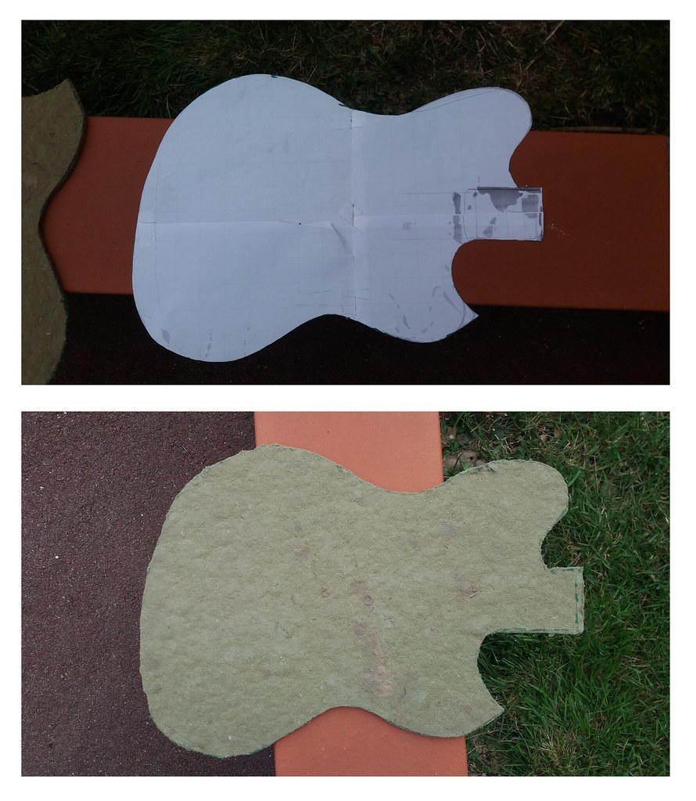
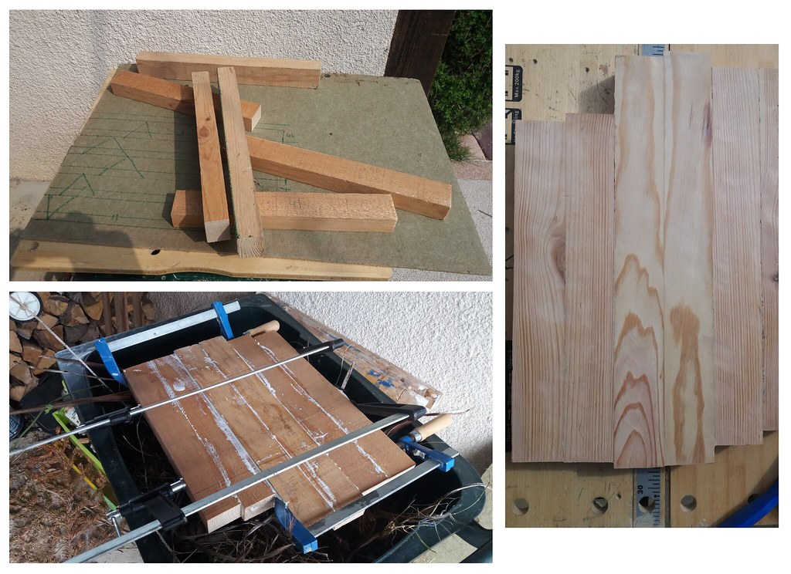


01
Woodworking & Electronics
Custom Electric Guitar Build
End-to-end design and fabrication of an electric guitar. This project involved everything from selecting raw wood and routing the body, to complex fretwork and custom electronic wiring.
Body drawing, routing, shaping, and finishing
Neck leveling and precise intonation
Custom pickup wiring and copper cavity shielding
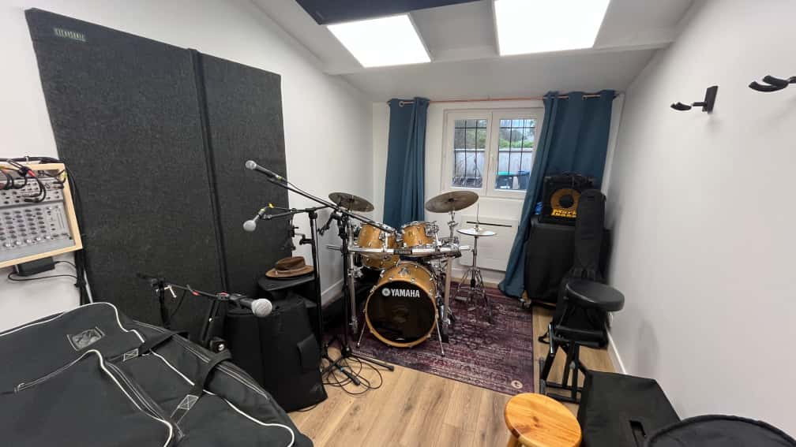
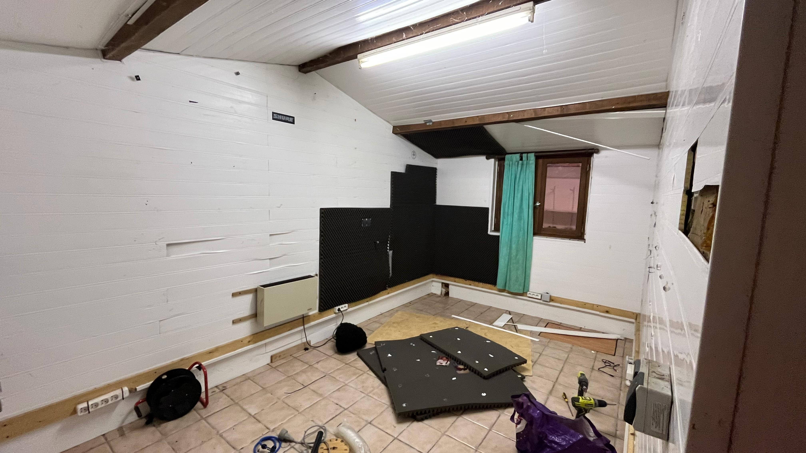
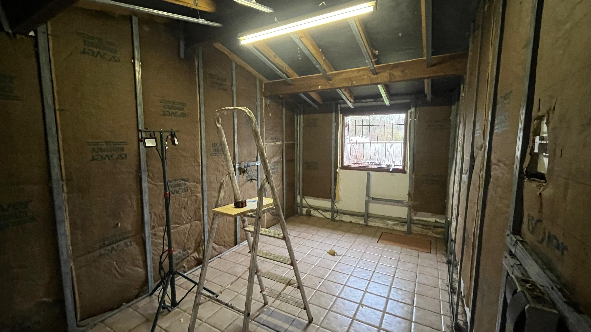
 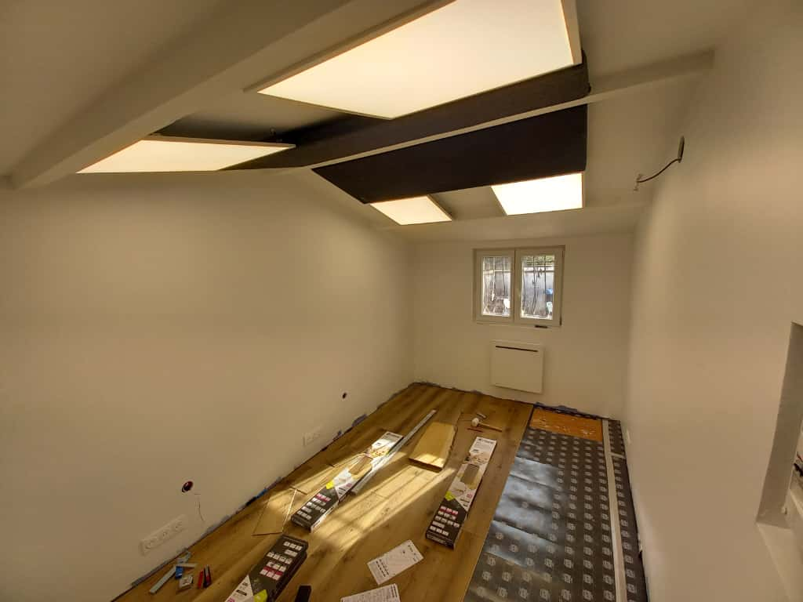
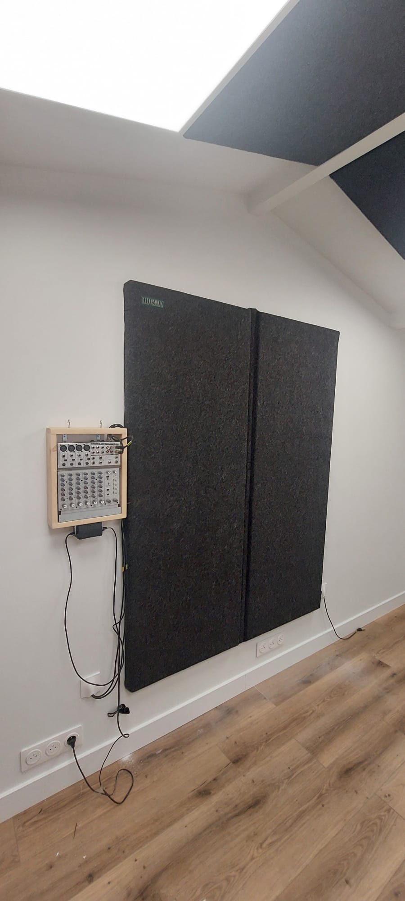
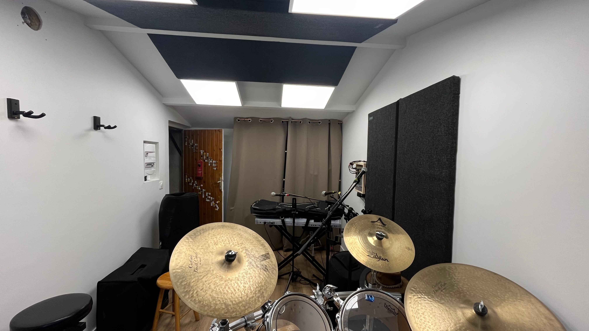
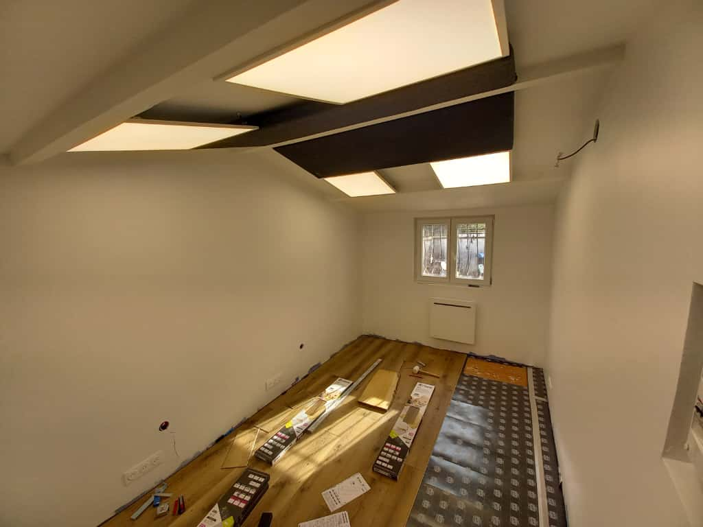
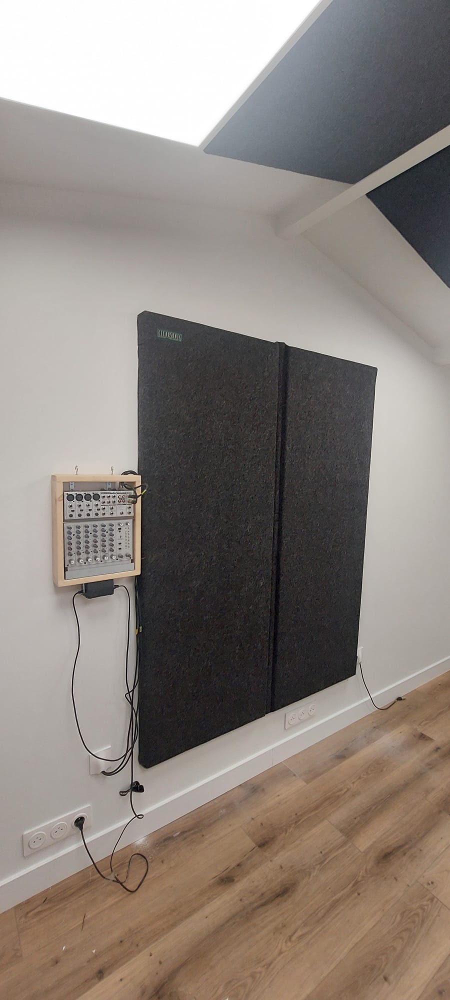
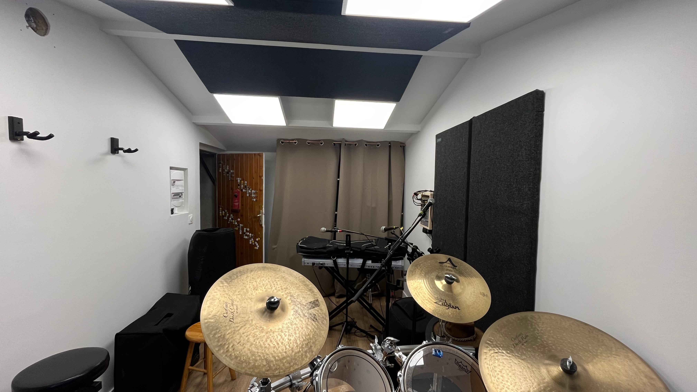
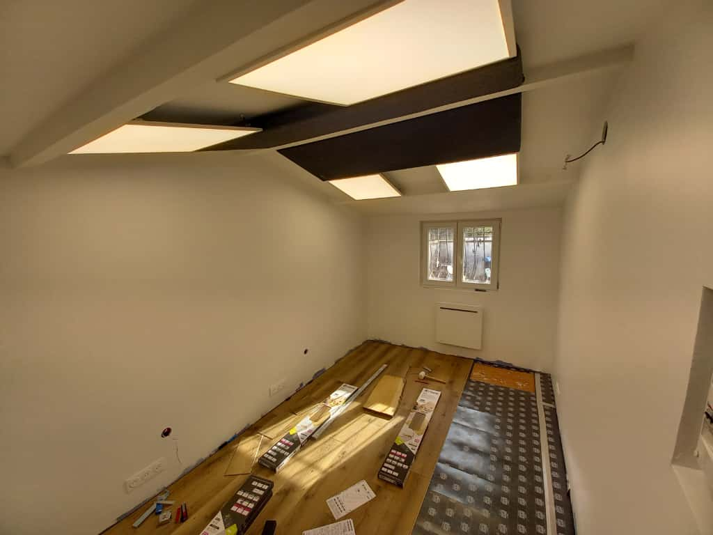
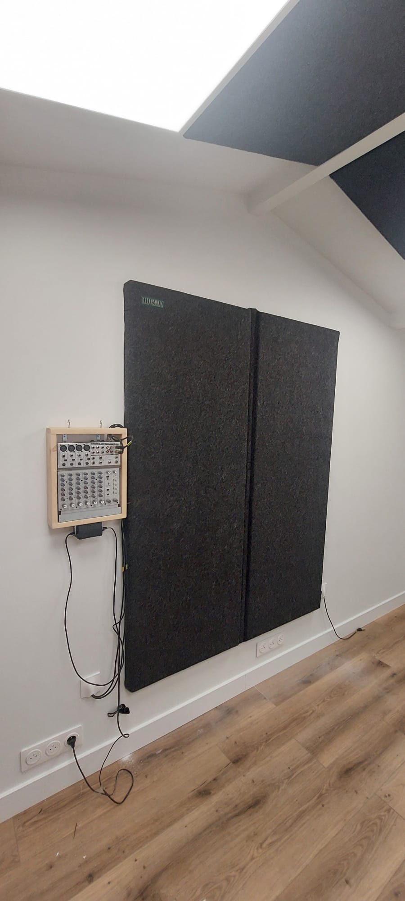
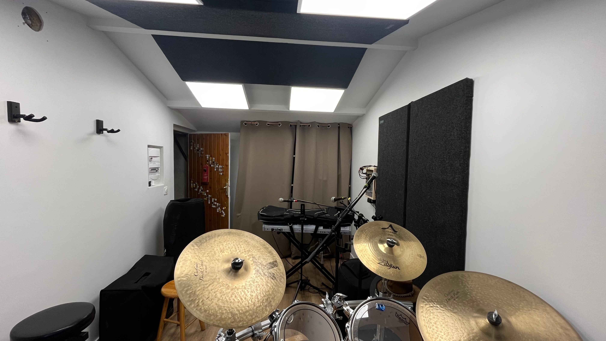
02
Acoustics & Carpentry
Music Rehearsal Room Build
Complete renovation of a garage space to create a sound-isolated music rehearsal room as a gift for my father. The project required careful acoustic planning, heavy framing, and interior finishing.
"Room-within-a-room" structural isolation framing
High-density acoustic insulation and drywalling
Electrical wiring and custom acoustic panels
03
Assistive Technology
Ultrasound Obstacle Detection
An Arduino-based wearable system designed for visually impaired individuals. It utilizes ultrasonic sensors to detect obstacles at chest and head level, providing intuitive haptic feedback to the user.
Programmed via Arduino (C++)
Integration of HC-SR04 ultrasonic sensors
Wearable ergonomic design with vibration feedback